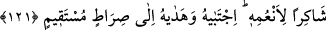
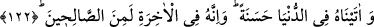

tahkik sâhiplerinin önderidir. Şirk ehliyle mücâdele etmiş, açık mûcize ve burhanlarla
onları susturmuş, kesin delillerle onların bâtıl mezheblerini iptal etmiştir.
“Allah’a ortak koşanlardan değildi.” Yani onların dinlerinin ne aslî ne de fer’î
konularından birinde onların bâtıl dinlerine tâbi olmamıştı. Bunda, Kureyşliler’in: “Biz
İbrahim (a.s.)’ın milleti üzereyiz” şeklindeki sözlerine red vardır.
121. Allah’ın nimetlerine şükrediciydi. Çünkü Allah, onu seçmiş ve doğru yola
iletmişti.
“Allah’ın nimetlerine şükrediciydi.” Rivâyet edilmiştir ki İbrâhim (a.s.) misafir
olmadan yemek yemezdi. Bir gün misafir bulamadı da yemeği ertesi güne te’hir etti.
İnsan suretinde meleklerden bir topluluk onun yanına vardı. İbrahim (a.s.) yemeği onlara
getirdi. Onlar da ona kendilerinde cüzzam hastalığı olduğunu hissini verdiler. Bunun
üzerine İbrahim (a.s.) şöyle dedi: “İşte şimdi sizi mübtela kıldığı halde bana verdiği
âfiyete şükür olsun diye sizin yanınızda yemek yemek bana vacib oldu.”
Denilir ki: İbrahim (a.s.) Muhammed ümmetine ziyafet vermek istedi. Bunun için
Allah’a dua etti ve dedi ki: “Ben acizim, sen her şeye kadirsin.” Bunun üzerine Cebrail
(a.s.) Ebû Kubeys dağına çıktı ve onu etrafa serpti. Allah da onu dünyanın bütün
kıtalarına yaydı. Bunun zerrelerinden bir zerre nereye düşmüşse, orası tuz madeni oldu.
Böylece tuz İbrahim (a.s.)’ın ziyafeti olmuş oldu.
Şeyh Sa‘dî (k.s.) der ki:
Ye, iç ve rahat ulaştır, ihsanda bulun
Senden sonra gelecek adamlar için neden biriktirirsin?
Gam da sevinç de geçer gider ancak
Yapılan amelin karşılığı ve iyi nam kalır.
“Çünkü Allah, onu” peygamber olarak “seçmiş ve” kendisine ulaştıran “doğru yola
iletmişti.” Bu yol, tam teslimiyeti içine alan İslam yoludur.
122. Ona dünyada güzellik verdik. Muhakkak ki o, âhirette de sâlihlerdendir.
“Ona dünyada güzellik verdik.” dünyada bütün insanlar arasında güzellikle anılma
ve övülme, salih evlatlar, genişlik ve taat içinde uzun bir ömür gibi güzel haller verdik.
Rasûlullah (s.a.) de onun neslindendir. Ona salât ve selam getirmek, Hz. Peygamber